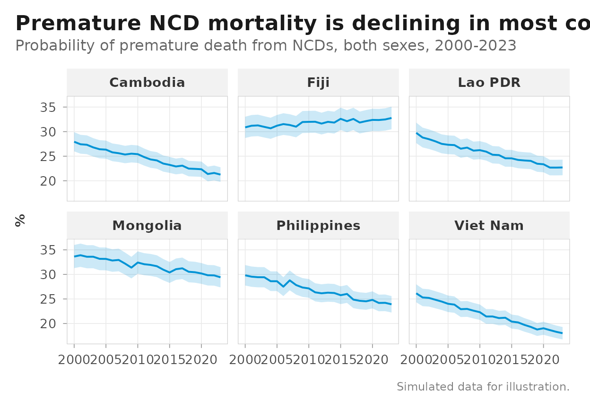
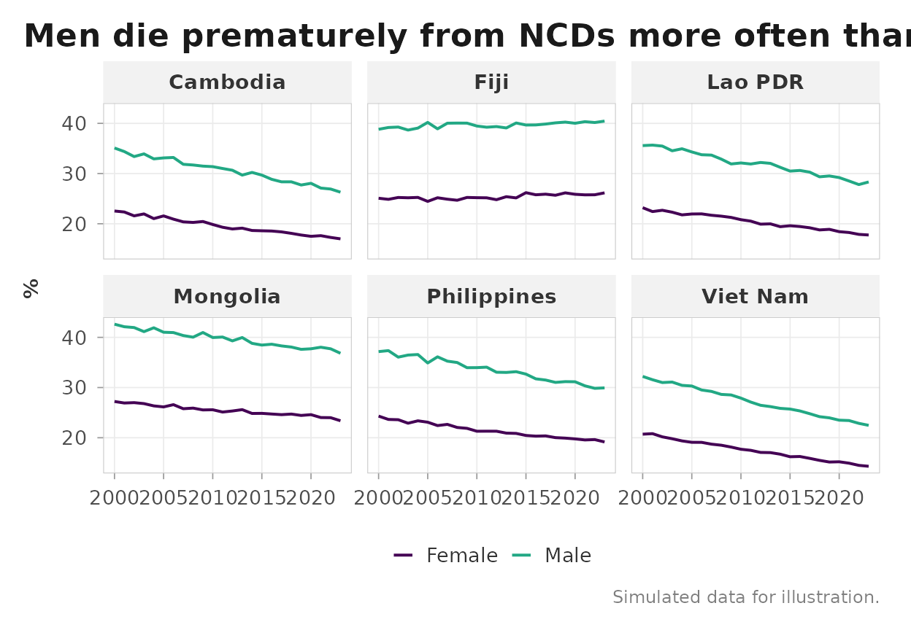
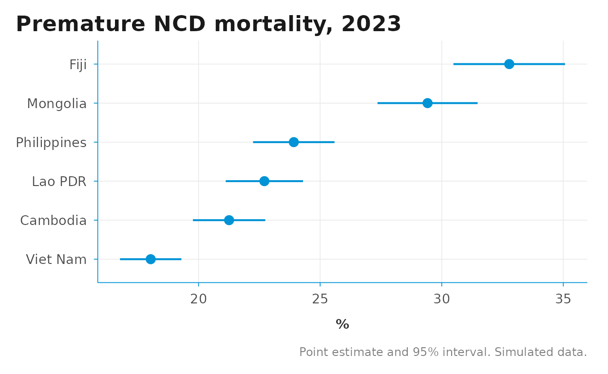
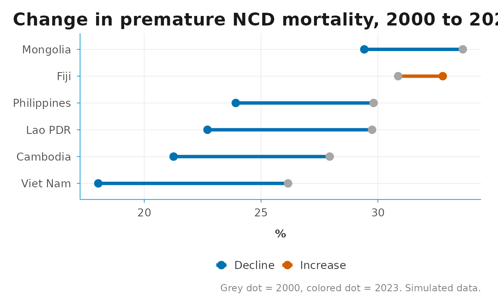

gho_clean() and sdg_clean() return data in
the same 15-column schema, so a handful of ggplot2 recipes
cover most routine indicator charts. This vignette collects the recipes
we reach for most often: trend lines with confidence bands, sex/age
breakdowns, forest-style country comparisons, dumbbell progress plots,
and progress tracking with aarr().
Chart-building helpers stay out of the package on purpose — each
recipe below is a few lines of plain ggplot2 on top of the
cleaned schema, and your project code can adapt them freely.
Example data
The recipes need data in the cleaned schema. A real workflow would start from the APIs:
ncd <- gho_data("NCDMORT3070", spatial_type = "country",
area = c("PHL", "VNM", "KHM", "MNG", "FJI", "LAO")) |>
gho_clean()So that this vignette builds offline (and to keep the examples
reproducible), we simulate a small dataset with the same shape: an
NCD-mortality-style indicator for six Western Pacific countries,
2000–2023, with a sex breakdown in dim1 and a confidence
band in low / high.
set.seed(416)
countries <- who_countries |>
filter(iso3 %in% c("PHL", "VNM", "KHM", "MNG", "FJI", "LAO")) |>
select(iso3, location_name = name_short)
grid <- expand.grid(
iso3 = countries$iso3,
year = 2000:2023,
dim1 = c("SEX_BTSX", "SEX_MLE", "SEX_FMLE"),
stringsAsFactors = FALSE
) |>
as_tibble()
base_rate <- c(PHL = 30, VNM = 26, KHM = 28, MNG = 34, FJI = 31, LAO = 29)
decline <- c(PHL = 0.010, VNM = 0.016, KHM = 0.012,
MNG = 0.006, FJI = -0.002, LAO = 0.011)
sex_shift <- c(SEX_BTSX = 1, SEX_MLE = 1.25, SEX_FMLE = 0.8)
ncd <- grid |>
left_join(countries, by = "iso3") |>
mutate(
value_num = base_rate[iso3] * (1 - decline[iso3])^(year - 2000) *
sex_shift[dim1] * exp(rnorm(n(), sd = 0.01)),
low = value_num * 0.93,
high = value_num * 1.07,
source = "gho",
id = "NCDMORT3070",
indicator = "Probability of premature death from NCDs (%)",
location = iso3,
year = as.integer(year),
value = as.character(round(value_num, 1)),
series = NA_character_,
dim2 = NA_character_,
dim3 = NA_character_
) |>
select(source, id, indicator, location, iso3, location_name, year,
value, value_num, low, high, series, dim1, dim2, dim3)
ncd
#> # A tibble: 432 × 15
#> source id indicator location iso3 location_name year value value_num
#> <chr> <chr> <chr> <chr> <chr> <chr> <int> <chr> <dbl>
#> 1 gho NCDMORT3… Probabil… KHM KHM Cambodia 2000 27.9 27.9
#> 2 gho NCDMORT3… Probabil… FJI FJI Fiji 2000 30.9 30.9
#> 3 gho NCDMORT3… Probabil… LAO LAO Lao PDR 2000 29.8 29.8
#> 4 gho NCDMORT3… Probabil… MNG MNG Mongolia 2000 33.6 33.6
#> 5 gho NCDMORT3… Probabil… PHL PHL Philippines 2000 29.8 29.8
#> 6 gho NCDMORT3… Probabil… VNM VNM Viet Nam 2000 26.2 26.2
#> 7 gho NCDMORT3… Probabil… KHM KHM Cambodia 2001 27.4 27.4
#> 8 gho NCDMORT3… Probabil… FJI FJI Fiji 2001 31.2 31.2
#> 9 gho NCDMORT3… Probabil… LAO LAO Lao PDR 2001 28.8 28.8
#> 10 gho NCDMORT3… Probabil… MNG MNG Mongolia 2001 33.9 33.9
#> # ℹ 422 more rows
#> # ℹ 6 more variables: low <dbl>, high <dbl>, series <chr>, dim1 <chr>,
#> # dim2 <chr>, dim3 <chr>Trend lines with a confidence band
low and high map directly onto
geom_ribbon(). Filter to a single stratum first — here the
both-sexes rows (dim1 == "SEX_BTSX").
theme_dsi_facet() is the facet-friendly variant of
theme_dsi().
ncd |>
filter(dim1 == "SEX_BTSX") |>
ggplot(aes(year, value_num)) +
geom_ribbon(aes(ymin = low, ymax = high), fill = "#0093D5", alpha = 0.2) +
geom_line(color = "#0093D5", linewidth = 0.7) +
facet_wrap(~ location_name) +
labs(
title = "Premature NCD mortality is declining in most countries",
subtitle = "Probability of premature death from NCDs, both sexes, 2000-2023",
x = NULL, y = "%",
caption = "Simulated data for illustration."
) +
theme_dsi_facet()
Breakdowns from dim1 / dim2 /
dim3
GHO breakdowns (sex, age group, …) arrive in dim1 /
dim2 / dim3. Map the stratum to
colour and keep palettes colorblind-safe —
scale_color_viridis_d() ships with
ggplot2.
ncd |>
filter(dim1 %in% c("SEX_MLE", "SEX_FMLE")) |>
ggplot(aes(year, value_num, color = dim1)) +
geom_line(linewidth = 0.7) +
facet_wrap(~ location_name) +
scale_color_viridis_d(end = 0.6,
labels = c(SEX_FMLE = "Female", SEX_MLE = "Male")) +
labs(
title = "Men die prematurely from NCDs more often than women",
x = NULL, y = "%", color = NULL,
caption = "Simulated data for illustration."
) +
theme_dsi_facet()
Forest-style country comparison
To compare countries at a single point in time with their uncertainty
intervals, take the latest year per country and use
geom_pointrange(). Ordering the axis by value makes the
ranking readable.
latest <- ncd |>
filter(dim1 == "SEX_BTSX") |>
slice_max(year, by = iso3)
ggplot(latest, aes(value_num, reorder(location_name, value_num))) +
geom_pointrange(aes(xmin = low, xmax = high),
color = "#0093D5", linewidth = 0.7) +
labs(
title = "Premature NCD mortality, 2023",
x = "%", y = NULL,
caption = "Point estimate and 95% interval. Simulated data."
) +
theme_dsi()
Dumbbell progress plot
A dumbbell plot compares two time points per country. Build the wide shape with two filtered slices and a join — no reshaping package needed. The colors are from the colorblind-safe Okabe-Ito palette.
start <- ncd |>
filter(dim1 == "SEX_BTSX", year == 2000) |>
select(location_name, start = value_num)
end <- ncd |>
filter(dim1 == "SEX_BTSX", year == 2023) |>
select(location_name, end = value_num)
dumbbell <- start |>
left_join(end, by = "location_name") |>
mutate(
direction = ifelse(end < start, "Decline", "Increase"),
location_name = reorder(location_name, start)
)
ggplot(dumbbell) +
geom_segment(aes(x = start, xend = end,
y = location_name, yend = location_name,
color = direction),
linewidth = 1.5) +
geom_point(aes(start, location_name), size = 3, color = "grey65") +
geom_point(aes(end, location_name, color = direction), size = 3) +
scale_color_manual(values = c(Decline = "#0072B2", Increase = "#D55E00")) +
labs(
title = "Change in premature NCD mortality, 2000 to 2023",
x = "%", y = NULL, color = NULL,
caption = "Grey dot = 2000, colored dot = 2023. Simulated data."
) +
theme_dsi()
Tracking progress with aarr()
aarr() computes the average annual rate of reduction —
the standard WHO / UNICEF progress metric. It slots directly into a
grouped summarise() on the cleaned schema. Remember the
sign convention: positive means the indicator is declining.
progress <- ncd |>
filter(dim1 == "SEX_BTSX") |>
summarise(aarr = aarr(year, value_num), .by = c(iso3, location_name))
progress |>
mutate(aarr_pct = round(100 * aarr, 1)) |>
arrange(desc(aarr))
#> # A tibble: 6 × 4
#> iso3 location_name aarr aarr_pct
#> <chr> <chr> <dbl> <dbl>
#> 1 VNM Viet Nam 0.0159 1.6
#> 2 KHM Cambodia 0.0117 1.2
#> 3 LAO Lao PDR 0.0112 1.1
#> 4 PHL Philippines 0.00995 1
#> 5 MNG Mongolia 0.00600 0.6
#> 6 FJI Fiji -0.00240 -0.2A back-of-envelope projection carries the latest value forward at the observed AARR. This is a quick screening device, not a substitute for the indicator-specific models behind official 2030 projections.
latest |>
left_join(progress, by = c("iso3", "location_name")) |>
mutate(projected_2030 = value_num * (1 - aarr)^(2030 - year)) |>
select(location_name, value_2023 = value_num, aarr, projected_2030) |>
arrange(projected_2030)
#> # A tibble: 6 × 4
#> location_name value_2023 aarr projected_2030
#> <chr> <dbl> <dbl> <dbl>
#> 1 Viet Nam 18.0 0.0159 16.1
#> 2 Cambodia 21.3 0.0117 19.6
#> 3 Lao PDR 22.7 0.0112 21.0
#> 4 Philippines 23.9 0.00995 22.3
#> 5 Mongolia 29.4 0.00600 28.2
#> 6 Fiji 32.8 -0.00240 33.3